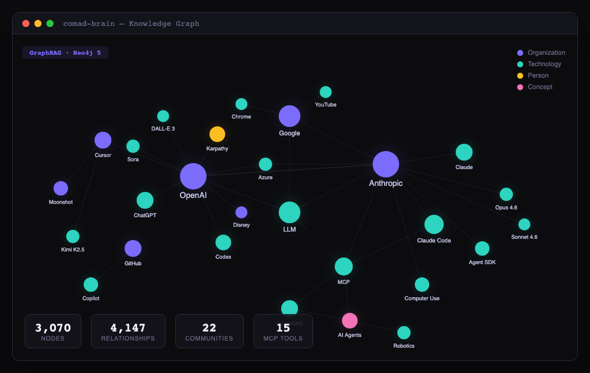

Brain — 지식 그래프 + GraphRAG
RSS·arXiv·GitHub·HN에서 수집한 기사/논문/레포를 Neo4j 온톨로지로 저장하고 엔티티·관계·Claim을 자동 추출합니다. 19개 MCP 도구와 Dual-Retriever GraphRAG로 자연어 질의응답을 제공합니다.
설치 & 초기 설정
Brain은 Neo4j 컨테이너와 Bun 런타임만 있으면 독립 실행됩니다. 최초 1회 실행:
# 루트에서
cd brain
docker compose up -d # Neo4j (bolt 7688, http 7475)
bun install
bun run setup # 스키마 + 인덱스 + MetaEdge bootstrap
bun run mcp # MCP 서버 시작bun run setup은 Neo4j에 제약조건(constraint) 7개, 풀텍스트 인덱스 4개,
MetaEdge 규칙 10개, 석학 렌즈 노드 12개를 한 번에 부트스트랩합니다.
중복 실행해도 안전(idempotent)합니다.
현재 그래프 규모
운영 중인 데이터 예시 (2026-04-13 기준):
| 라벨 | 노드 수 | 설명 |
|---|---|---|
Claim | 9,046 | 기사·논문에서 추출된 fact/opinion/prediction |
Topic | 8,088 | 개념/주제 태그 |
Technology | 4,457 | 라이브러리·프레임워크·프로토콜 |
Person | 2,361 | 연구자·창립자 등 인물 |
Organization | 1,562 | 기업·연구소 |
Article | 1,553 | 원본 기사/블로그 포스트 |
Paper | 38+ | arXiv 논문 |
Repo | 100 | GitHub 레포지토리 |
MCP 도구 (19개)
모든 도구는 bun run mcp로 시작되는 MCP 서버 위에서 Claude Code의 자연어 호출로 사용됩니다.
| 도구 | 용도 |
|---|---|
comad_brain_ask | GraphRAG 기반 자연어 질의 → 출처 포함 답변 |
comad_brain_search | 풀텍스트 검색 (노드 타입 필터 가능) |
comad_brain_recent | 최근 N일 추가된 기사/Claim 조회 |
comad_brain_stats | 그래프 통계 (노드/엣지/라벨별) |
comad_brain_related | 엔티티의 관련 노드 N개 추천 |
comad_brain_impact | OpenCrab I1~I7 기반 엔티티 영향도 분석 |
comad_brain_explore | 특정 노드 주변 서브그래프 탐색 |
comad_brain_claims | Claim 필터링 (type/confidence/verified) |
comad_brain_claim_timeline | 엔티티에 대한 Claim의 시간축 타임라인 |
comad_brain_temporal | 시점 기준 그래프 스냅샷 쿼리 |
comad_brain_stale | 오래된/신뢰도 낮은 Claim 탐지 |
comad_brain_trend | 기간별 언급량 추이 |
comad_brain_contradictions | CONTRADICTS 엣지가 있는 Claim 쌍 |
comad_brain_communities | 커뮤니티 목록 + 구성원 |
comad_brain_dedup | 중복 엔티티 fuzzy 탐지 + 병합 |
comad_brain_meta | MetaEdge 규칙 실행/조회 |
comad_brain_refine | 엣지 가중치 · 신뢰도 decay · 프루닝 제안 |
comad_brain_export | JSON / JSON-LD / CSV 내보내기 |
comad_brain_perf | 도구별 호출 횟수 · 응답 시간 |
GraphRAG 질의 (ask)
가장 자주 쓰는 도구. 자연어 질문 → 엔티티 추출 → Dual-Retriever(Local + Global + Temporal) → 3KB 컨텍스트 자르기 → synth → 출처 포함 답변.
Claude Code 안에서
You: MCP란 무엇이고 어떤 기업이 쓰고 있나?
(comad_brain_ask 호출 →)
Claude: MCP는 JSON-RPC 2.0 기반 오픈 표준으로 OAuth 2.0 통합.
9개 기업 식별: Anthropic, OpenAI, Google, Microsoft,
Block, Bloomberg, AWS, Cloudflare, Linux Foundation.
출처: [기사: "The MCP protocol landscape", 2026-03-18]
[Grounding rate 93% — 인용된 엔티티 모두 그래프에 실제 존재]CLI 벤치마크 스크립트로
bun run packages/graphrag/src/run-benchmark.ts실제 측정값
| 지표 | 값 | 의미 |
|---|---|---|
| Entity Recall | 93% | 답변에 기대 엔티티가 포함된 비율 |
| Grounding Rate | 93% | 인용된 엔티티가 실제 그래프에 존재하는 비율 (hallucination 방지) |
| Avg Latency | 13.8s | 질문당 p50 지연 |
| Hard Good Rate | 72% | 다중 홉 추론 질문 good 판정 비율 |
크롤러 파이프라인
5개 소스 × 병렬 fetch + Haiku 엔티티 추출 + Neo4j 저장. 모두 --smol 메모리 플래그 적용.
| 명령 | 소스 | Haiku 사용 | 기본 스케줄 |
|---|---|---|---|
bun run crawl:hn | Hacker News | ◯ (엔티티) | crawl-blogs와 병합 |
bun run crawl:arxiv | arXiv API + 논문 fetch | ◯ (엔티티+Claim) | 매일 09:00 (limit 200) |
bun run crawl:github | GitHub trending | ◯ | 월 11:00 |
bun run crawl:blogs | 25개 블로그 RSS | ◯ | 매일 10:00 |
bun run crawl:ingest | 로컬 JSON 파일 인제스트 | ◯ | 각 크롤 직후 |
bun run crawl:resume | 실패한 인제스트 재시도 | — | 수동 |
bun run crawl:retry | failed articles 재처리 | — | 수동 |
실제 로그 스니펫
$ bun run crawl:arxiv -- --limit 100
arxiv Crawler: target 100 papers
=== cs.CL (target: 100) ===
"language model" offset=0 → 200 found, 100 new (total: 100)
Collected 100 papers total
$ bun run crawl:ingest -- --source arxiv --file /tmp/arxiv.json
Ingesting 100 items from arxiv...
Fetching full content for 100 items (5 workers)...
[content-guard] 1 threats in https://arxiv.org/html/...: invisible_unicode_U+200b
[content-fetcher] Content flagged. Using cleaned version.
Entities extracted: 87/100 (claude -p --model haiku)
Claims extracted: 312 (avg 3.1/paper)
Done: 100/100 items ingested (3.2 min)커뮤니티 감지
Cypher 기반 label propagation (Community Edition에 GDS 없음). C1→C2→C3 3단계 계층 클러스터링.
# MCP 도구로
comad_brain_communities # 22개 커뮤니티 목록
# 직접 스크립트로 재실행
bun run packages/core/src/community-detector.ts| 단계 | 단위 | 기준 | 출력 |
|---|---|---|---|
| C1 Tech | Technology 공동등장 | 같은 Article에서 함께 언급 | ecosystem 클러스터 |
| C2 Topic | Topic 클러스터 | SUBTOPIC_OF 계층 | 주제 카테고리 |
| C3 Meta | C1 + C2 교차 | 멤버 중첩 ≥ threshold | 상위 커뮤니티 |
그래프 시각화
Neo4j Browser를 http://localhost:7475에서 열고, 왼쪽 노드 라벨 중 Community를 클릭하면 계층 구조가 보입니다. 또는 커스텀 explorer:
bun run packages/explorer/src/server.ts
# → http://localhost:3001 (D3.js 인터랙티브 뷰)
품질 벤치마크
50문항 고정 문제 세트로 주간 측정합니다. 난이도별 recall · grounding rate · latency를 기록해 그래프 성장에 따라 품질이 향상되는지 추적.
$ bun run packages/graphrag/src/run-benchmark.ts
GraphRAG Benchmark — Starting...
Graph: 27,320 nodes, 45,103 edges
[b01] easy Transformer 아키텍처를 처음 제안한 논문은?
✓ 9.9s (recall: 100%, grounding: 100%)
...
[b50] hard Constitutional AI가 RLHF 대비 해결한 문제는?
✓ 15.1s (recall: 100%, grounding: 92%)
═══════════════════════════════════════
Good: 25 Partial: 25 Poor: 0
Entity Recall: 93%
Grounding Rate: 93%
Avg Latency: 13.8s
───────────────────────────────────────
easy recall: 100% good: 27%
medium recall: 83% good: 47%
hard recall: 96% good: 72%
═══════════════════════════════════════CONCEPT_EXPANSIONS 추가 + 3KB context cap (Karpathy 지적) + Neo4j 기반 동적 확장(Bush). 이전 대비 Recall 83% → 93%, Latency 20.7s → 13.8s, Hard Good Rate 25% → 72%.
comad.config.yaml
도메인을 바꾸려면 YAML 한 파일만 수정합니다. presets/ 디렉토리에 AI/ML, Web Dev, Finance, Biotech 4개 템플릿.
interests:
high:
keywords: ["LLM", "MCP", "GraphRAG", "Neo4j"]
sources:
rss:
- https://openai.com/blog/rss.xml
- https://www.anthropic.com/rss.xml
arxiv:
categories: [cs.CL, cs.LG, cs.AI]
hn_queries: ["MCP", "agent", "GraphRAG"]
github_topics: ["mcp", "llm", "rag"]
must_read_stack:
- "Claude Code"
- "MCP"
- "Neo4j"cp presets/finance.yaml comad.config.yaml → 크롤러·엔티티 추출·관련성 판정이 전부 금융 도메인으로 재구성됩니다. 코드 변경 없음.